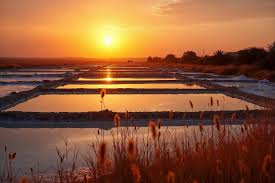
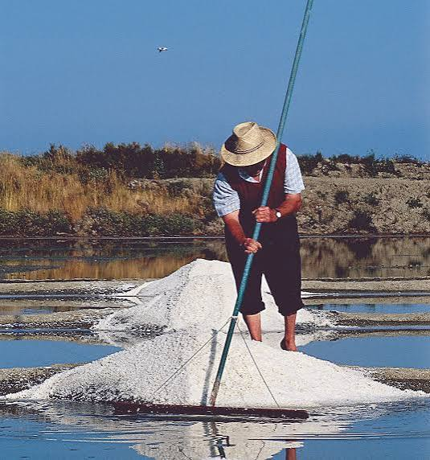

Sel de
l'Île de Ré


⟹ Produits de la Mer & Terroir ⟸
Le sel de l'île de Ré est l'un des produits les plus emblématiques du littoral atlantique français. Récolté depuis plus de mille ans dans les marais salants de cette île charentaise baignée de lumière, il est aujourd'hui protégé par une Indication Géographique Protégée qui garantit son origine et son mode de production entièrement artisanal.

Les premières traces de production de sel à l'île de Ré remontent au Xe siècle, époque à laquelle les moines de l'abbaye des Châteliers organisaient déjà l'exploitation des marais salants. Le sel rétais était alors une denrée précieuse, utilisée pour la conservation des aliments et objet d'un commerce florissant avec les pays du nord de l'Europe — notamment les Pays-Bas, l'Angleterre et les pays scandinaves qui l'utilisaient massivement pour le traitement du hareng et de la morue.
« Le sel de Ré est blanc comme neige, fin comme sable et pur comme la lumière de l'Atlantique. »
— Description d'un négociant hollandais, XVIIe siècleAux XVIIe et XVIIIe siècles, l'île de Ré était l'un des plus grands centres de production de sel de France. Des centaines de paludiers travaillaient les œillets — ces petits bassins de cristallisation creusés à la main — selon des techniques transmises de génération en génération. La révolution industrielle et l'apparition du sel industriel bon marché provoquèrent un déclin progressif de cette activité, réduisant considérablement le nombre de marais en activité.
La renaissance du sel artisanal rétais s'amorce dans les années 1980, portée par une prise de conscience patrimoniale et gastronomique. Les paludiers, organisés en coopérative, obtiennent l'IGP en 2012, consacrant définitivement la singularité d'un sel façonné par le vent, le soleil et le savoir-faire humain depuis des siècles.

Aujourd'hui, une centaine de paludiers travaillent sur l'île de Ré, entretenant à la main les quelque 1 500 hectares de marais salants. Ce paysage singulier, classé pour sa valeur écologique et paysagère, abrite une biodiversité remarquable — avocettes, hérons cendrés, aigrettes — et constitue l'un des espaces naturels les plus précieux du littoral charentais.
Fleur de sel de l'île de Ré IGP : la plus précieuse des récoltes, récoltée à la main en surface. Texture légère et croquante, arômes iodés délicats. Réservée à la finition des plats.
Sel gris de l'île de Ré IGP : le sel traditionnel, gris grâce à l'argile bleue des œillets. Riche en magnésium et oligoéléments, plus humide et plus minéral que les sels industriels.
Sel aux algues de Ré : mélange artisanal de sel gris et d'algues séchées de l'Atlantique — goémon, dulse ou wakamé — pour un sel iodé très parfumé, idéal pour les poissons et fruits de mer.
Sel aux herbes de l'île : certains paludiers proposent des mélanges maison avec du thym, de la sarriette ou du romarin cueillis sur l'île, pour des sels aromatiques à offrir ou à utiliser en cuisine du quotidien.
Caramel beurre salé au sel de Ré : spécialité confiserie utilisant la fleur de sel rétaise pour rehausser la douceur du caramel — l'une des combinaisons les plus populaires de la gastronomie française contemporaine.
Le sel de l'île de Ré IGP est disponible directement sur l'île, mais aussi dans les épiceries fines et grandes surfaces de la région.
La Coopérative des Sauniers de l'île de Ré (Loix) — La référence absolue. Boutique sur place avec visite des marais possible en saison, vente directe de l'ensemble de la gamme IGP.
Ars-en-Ré et Loix — Ces deux communes concentrent la majorité des marais salants en activité. De nombreux paludiers vendent directement leur production depuis leur exploitation.
Marché de Saint-Martin-de-Ré — Le marché du bourg principal de l'île propose chaque matin en saison des sels artisanaux, des conserves et des produits locaux élaborés avec le sel rétais.
La Rochelle — Le marché central et les épiceries fines du centre-ville proposent une large sélection de sels de Ré IGP, souvent associés à d'autres produits charentais.
Vente en ligne — La coopérative et plusieurs paludiers indépendants expédient leur production dans toute la France via leur site internet — idéal pour se réapprovisionner hors saison.